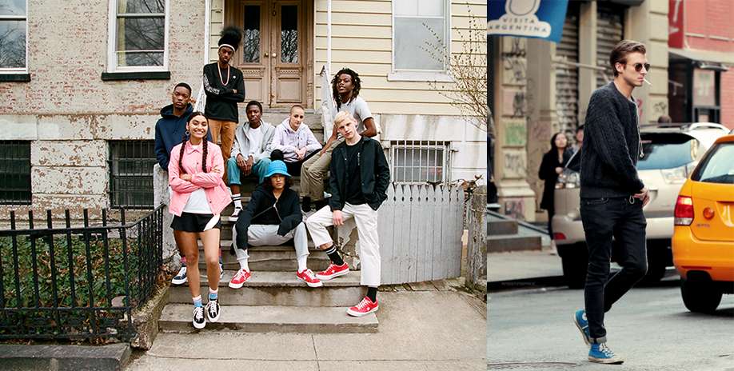
본사위치: 미국매사추세츠 보스턴
창립자: 마르키스 컨버스(Marquis M. converse)
컨버스 창립: 1903년
1908년 마르키스 컨버스 (MARQUIS M.CONVERSE)가 컨버스 방한용 고무창 신발회사(CONVERSE RUBBER SHOE COMPANY)를 메사츄세스주 엔도버에 설립하면서
시작되었으며 설립자인 마르키스 컨버스의 아명에서 본딴 아메리칸 오리지널 캐쥬얼 스포츠 컴퍼니 척테일러, 올스타, 잭퍼셀, 스타 쉐브론, 원스타와 같은
전설적인 신발들을 만들어낸 브랜드이다.
한국에서는 1996년 스프리스를 통해 판매되었다. 그러나 미국 컨버스사와의 계약만료에 따라 2005년부터는 반고인터내셔날과 독점계약하여 한국에 컨버스 단독매장을 열었다.
현재는 ABC마트를 통해서도 캔버스화를 위주로 판매를 하고 있다. 현재는 반고인터내셔널과의 계약이 만료되었고 컨버스코리아로 분리되었다.
-
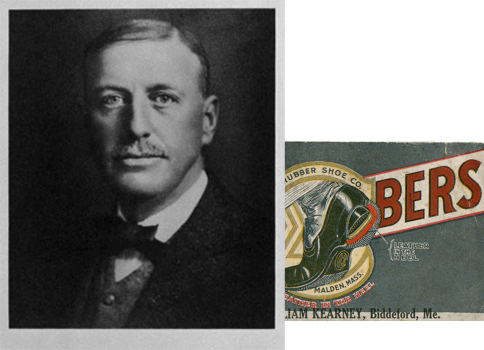
1890s
Marquis Mills Converse는 우리의 독창적인 건축업자이자
사기꾼이자 창립 아버지로서 보스턴 소매업체에 고무 장화를 판매하는
도매 사업으로 Converse & Pike를 시작했습니다
-
1900s
Marquis Converse는 250,000달러의 벤처 캐피털(오늘 약 650만 달러)로
Converse Rubber Shoe Company를 반등하고 출범시킵니다.
1908년의 스타트업으로서는 나쁘지 않습니다.
-
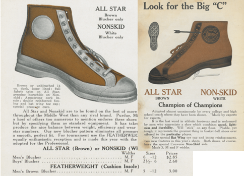
1910s
전설적인 신발의 탄생. 1910년까지 Converse는
하루에 5,500켤레의 신발을 만듭니다 우리는 운동화로 영역을 확장했습니다
모호하지만 성장하는 농구 스포츠를 위해 제작된 Non-Skid는 오늘날
Chuck의 증조부입니다 1919년, 논스키드는 올스타로 이름이 변경되었다.
-
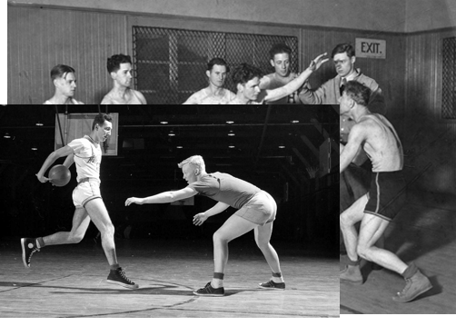
1920s
Taylor는 미국을 여행하며 농구 클리닉을 주최하고 뛰어난 카리스마와
세일즈맨십으로 Converse를 홍보하고 Converse를 원래의 스포츠 마케터
로 확립하는 데 도움을 줍니다. 브랜드 농구 연감이 1922년에 데뷔했습니다.
-
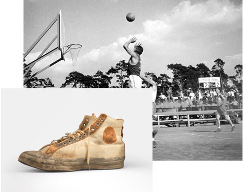
1930s
최초의 올림픽 농구 경기. Chuck Taylor는 1932년에 농구 올아메리칸을
선발하기 시작했으며 1934년까지 그의 헌신에 대한 보답으로 올스타에
그의 이름을 추가했습니다. 최초의 올림픽 농구 선수권 대회는 1936년
베를린 하계 올림픽에서 열리며 미국인들은 빨간색과 파란색 줄무늬가
있는 올스타를 착용합니다
-
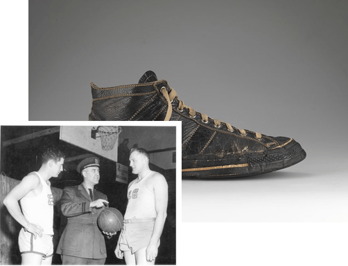
1940s
말 그대로 군대를 지원합니다. 농구는 군대를 포함한 새로운 관계를 구축
하는 데 도움이 됩니다. Chuck Taylor는 공군 대령으로 국가에 봉사하고
지역 농구팀을 지도합니다.
-
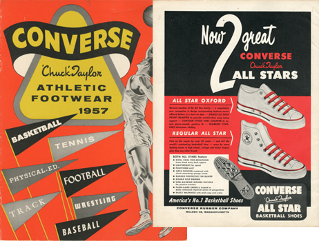
1950s
농구 코트에서 우위. 1955년까지 Chucks는 미국 최고의 농구화였으며
Converse는 전체 운동화 산업의 80%를 소유했습니다. 로우탑 올스타는
1957년 데뷔하여 큰 인기를 얻었다.
-
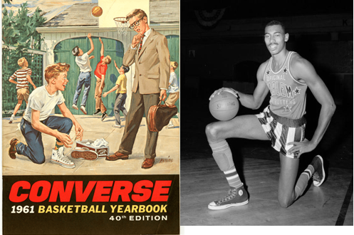
1960s
프로 및 대학 팀의 90%가 올스타를 착용합니다. 올스타는 운동화로서의
오랜 역사를 마무리하고 라이프스타일 신발로 거듭나고 있습니다.
향후 50년 동안 가장 기억에 남는 문화적 순간에 조연 역할을 할 것입니다.
-
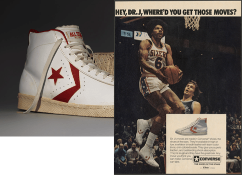
1970s
클래식 스타 셰브론 휘장은 1975년에 데뷔했습니다. 이는 역사상
다른 어떤 신발보다 많은 프로 및 대학 선수들이 착용하게 될 새로운
올스타 프로 가죽에 나타납니다.
-
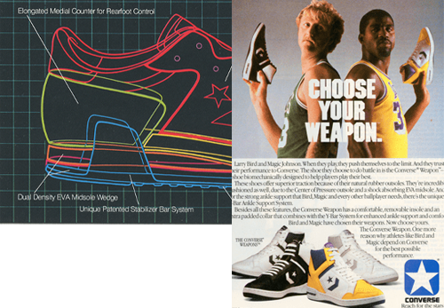
1980s
1980년대 초, Converse는 업계 최초의 생체 역학 연구소 중 하나를
개발하여 업계 최초의 하이테크 미드솔 쿠셔닝 시스템, 에너지 반환 기술 및
모션 제어 장치를 제공합니다. 가장 가벼운 농구화 중 하나인 가볍고
통기성이 좋은 Fastbreak가 1983년에 등장했습니다.
-
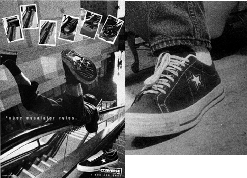
1990s
빌더들에게 우리는 REACT 기술을 개선하기 위해 다시 처음으로 돌아가
10년이 끝날 때까지 이를 단계적으로 제거합니다. 1997년에 우리는
이정표를 세웠습니다. Taylor 씨의 상징적인 신발은 지금까지
5억 5천만 켤레가 생산되었습니다.
-
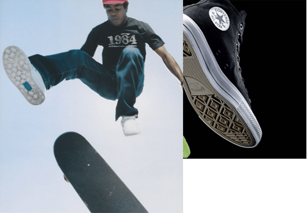
2000s
2003년 – Nike가 3억 500만 달러에 우리를 사들입니다.
우리는 함께 80년대 아이콘의 스타일 부활, 스케이트보드
프로그램, 신발을 넘어서는 의류 및 제품으로의 확장을 통해
Converse 브랜드에 다시 활력을 불어넣습니다.
-
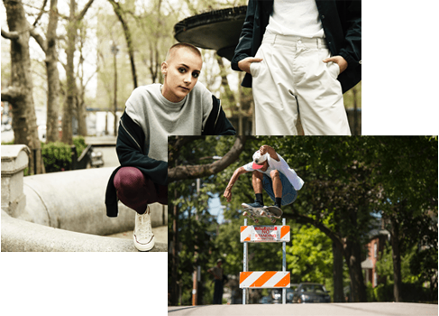
2010s
2015년에 우리는 Lovejoy Wharf에 있는 Boston 시내의 새로운
10층짜리 World HQ 건물로 이사했습니다. 여기에는 대규모 체육관,
플래그십 스토어, 임시 전시인 Rubber Tracks: 수년 동안 Converse를
지원한 모든 아티스트와 음악가에게 헌정하는 무료 녹음 스튜디오가 있습니다.